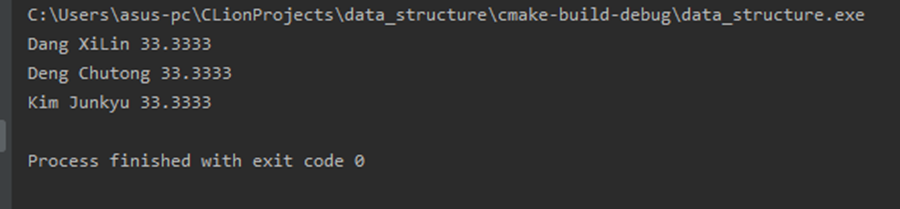

初级数据结构研究报告。我正在着手学习更高级的数据结构，此时，初级数据结构成为了很好的基础。谨此记录一些时间复杂度分析和数据结构优缺点分析。
Lab1 Recursion
Subject1. Solve the hanoi problem with recursion
Introduction
Write a recursive program to solve the Hanoi problem, output the procedure of movements of the disks.
Algorithms Specification
Hanoi is a classic problem of recursion algorithm, which can be easily divided into smaller tasks to be solved.
I wrote a function called Hanoi, which handles the situation when there are n disks need to be move.
When the function is handling only 1 disk, then it is obvious that just move the disk from needle A to C.
Otherwise, we break the task into two smaller pieces, which handle scale of n-1 disks respectively.
There is no specific data structure used.
Test results
- input n=5
This implies that there are 5 disks need to be moved initially.
The output is:
which is defintely correct.
- input n=0
There is no output, and the program reach its end.
Which means the input is invalid.
Analysis and Comments
Time complexity:
$T(n)=2\times T(n-1)+1$
$=2\times (2\times T(n-2)+1)+1$
$=2^{2}\times T(n-2)+1+2^{1}$
$…$
$=2^{k}\times T(1)+1+2^{1}+…+2^{k-1}$
$=O(2^k)+O(2^k)$
$=O(2^k)$
and we know, $k=n-1$.
Therefore, time complexity is $O(2^n)$
Space complexity:
This requires space for saving the recursions.
Therefore, the time complexity and space complexity are both large. However, for this problem, we cannot get more time efficient algorithm since the requirement is output the total moves and the number of moves is $O(2^n)$.
Source code
1 | #include<stdio.h> |
Subject2. The problem of finding the paths and the number of paths
Introduction
Given an $m$ by $n$ grid as shown in the following figure (in the figure $m=2$ and $n=5$).
Suppose there is a robot at the upper left corner (with the coordinate (m,n)) and the robot can only take one step to the right or down at a time, the questions are:
- how many paths are there for the robot to reach the lower right corner (with the
coordinate (1,1)) - output the paths.
Algorithms Specification
The number of paths can be obtained in two different ways:
- Since the robot can only walk in two directions, the number of steps to the destination is a constant then, which equals to $m+n-2$. Therefore, we choose $m-1$ steps from the total steps to walk downwards, which is simply $\tbinom{m+n-2}{m-1}$.
- the other way to obtain the number of ways is using recursion.
For the part of finding the exact steps, we can simply write one function of DFS while using an array to record the steps. The DFS (i.e.recursion) stops at (1,1), which is the destination. When we reach the destination, print the array.
To record the steps, I use a struct data type named PathType.
Test results
- input: 5 2
Input the sample input of the question to test. The answer is correct.
- input: -4 -4
Input an invalid input to test if it will fall into an infinite loop. The result seems everything is fine.
Analysis and Comments
Time complexity:
- pathnum
Pathnum uses combination to calculate the number of paths, since it needs to calculate factorial. The easier way to calculate factorial is simply one while loop or recursion, since it is always better to use while loop then recursion to save the space, we choose while loop, which requires $O(n)$.
There is another way to calculate factorial, that is, using the decomposition of Number Theory. The factorial can be expressed as a product of primes with specific powers.
- pathnum2
Pathnum2 uses recursion to calculate the number of paths, the time complexity is roughly $O(\frac{(n+m)!}{n!m!})$.
Prove:
(i) We first use programs to get the times of calculating f(m,n), and record them inside one table.
1 | #include<stdio.h> |
We obtain the matrix A:
whose row represents $m$, and column represents $n$, and value represents how many times the recursion function is called during calculating the number of paths starting from (m,n).
Observing A, we can construct a new matrix B whose values on the corresponding position are $\frac{A+1}{2}$.
B has one characteristic(*):
Therefore, we only need to find the relation equation between $m$,$n$ and , and after that we can get the representing equation between $m$,$n$ and $a_{m,n}$, as well as the time complexity.
We know that Pascal triangle also has the characteristic(*). So we write the matrix of Pascal triangle(C):
Compare C and B, we obtain that the only difference is that the starting values of each row and column are different. The ones of B is, while the ones of C is .
Thus, we guess that B is obtained by addition of C and another C that offset a bit, since both B and C satisfy (*).
By comparing C and B one by one, we obtain that C is a sum of B and another Pascal triangle.
Therefore, we obtain the relation equation of $m$ and $n$ and using the matrix expression of Pascal triangle:
Therefore:
Completed.
- disppath
Disppath also use recursion to record the paths, so its time complexity is the same as the one of pathnum2.
Space complexity:
- pathnum
Since we do not need any array to save temporary data, the space complexity is $O(1)$.
- pathnum2
It requires some space of stack to save the statuses when go through recursion.
- disppath
It is the same as the one of pathnum2.
The time complexity and space complexity are quite large, and they depend on how many statuses encountered when doing the recursion. Therefore, if we consider Memory Search, that is, avoid repeating the statuses that already been through, the time and space will be saved to some extent.
Source code
1 | #include<stdio.h> |
Lab2 List
Subject1. Sequential list
Introduction
Implement the abstract data structure: Sequential list, introducing its characteristics.
Algorithms Specification
There is no specific algorithm used.
When we need to modify some elements, we just modify them according to the index that we already know.
When we need to do addition and deletion, we need to move the elements behind the one we are going to operate.
Test Results
Analysis and Comments
Time Complexity:
- create: $O(1)$
- initialization: $O(n)$
- check if is empty: $O(1)$
- check the length: $O(1)$
- display the list: $O(n)$
- get the element: $O(1)$
- locate one element (query) $O(n)$
- insert and delete $O(n)$
Space Complexity:
it only requires space for the array. Therefore, the space complexity is $O(n)$.
Sequential list is easy to implement.
The only significant thing it contains is one array of some data type.
Therefore, obtaining element in specific position is quite direct, as well as modifying the value of several elements.
However, it may be somehow troublesome to delete or add elements, since the elements are consecutive, and they have unique indexes.
Moreover, one should know the scale of the amount of data first, which is not flexible enough.
Source Code
1 | // |
Subject2. Linked list
Introduction
Implement the abstract data structure: Linked list, introducing its characteristics.
Algorithms Specification
Linked list is a data structure that specifies in pointers.
Data is not sequential, but be as node while linked by pointers.
Therefore, addition and deletion take $O(1)$ time, while find operation will take $O(n)$ time, since it should go through the list, and there is no direct match between data and position.
This data structure makes it faster to modify the number of data inside. However, query will be slower than before.
Test Results
Comment:
- initializes the linked list, making it becomes “artist”.
- it display the linked list. After that, it adds five elements from ‘a’ to ‘e’ to the back of the linked list and print the list.
- it returns the number of elements in the list and print it.
- insert one element ‘f’ into the position after the 3rd node and print the list.
- delete the element after the 2nd node and print the list.
Analysis and Comments
Time Complexity:
- initialization: $O(n)$
- return the length of the list: $O(n)$
- find the position of one element: $O(n)$
- insert and delete one element: $O(1)$. In this program, however, the corresponding functions require $O(n)$ time since we need to find the position first.
Space Complexity:
Generally, it requires $O(n)$ space.
It may be larger than using sequential list since linked list requires space for storing pointers.
Therefore, if we need to do a large amount of addition and deletion, linked list is obviously better than sequential list.
However, if we need to do a large amount of modification instead, sequential will be a better choice.
Source Code
1 | // |
Subject3. Polynomial (optional)
Introduction
Implement the abstract data structure: Linked list, introducing its characteristics.
Polynomial is one application of linked list.
This application uses the feature that insertion and deletion in linked list are quite efficient.
Algorithms Specification
The addition and deletion of nodes are easy to implement since it only requires to modify the next pointer of the node you specify and the next pointer of the position node.
The addition and multiplication of two polynomials are slightly more complicated.
As for addition:
We go through all the nodes of the operands A and B simultaneously. When the exponent of the current node in A is greater than that of B, it means that this node in A has one unique exponent. Therefore, we insert this node into the end of the result polynomial directly. This is the same for the case that the current node of B has a greater exponent than the one of A. In the third case that the node of A and that one of B have same exponent, we can do addition of their coefficients, after which we obtain a new node and insert it into the result polynomial.
As for multiplication:
The process consists of two nested while loops. The outside one goes through all nodes of A, as for each node in A, we again go through all nodes in B. Based on this process, we can get the product of each node of A and each node of B. All we need to do is to add all of them together.
Therefore, we see the partial product of each single node as one contribution to the result polynomial. We add them one by one.
Test Results
Analysis and Comments
Time Complexity:
The other simple operations have the same time complexity as linked list, since this polynomial is based on linked list.
The addition operation takes $O(n)$ time. Since it needs to go through all the nodes in A and B simultaneously once.
The multiplication operation takes $O(n^2)$ time. Since it needs to fix one node in A and loop through all nodes in B.
Space Complexity:
It takes $O(n)$ space to store polynomials.
The time complexity of multiplication is $O(n^2)$, but we cannot reduce this because it is necessary to go through all combinations to implement multiplication of polynomials.
It seems that linked list is one good choice of data structure to do this thanks to the convenience for modify.
Source Code
1 | // |
Lab3 Binary Tree
Subject1. The creation and traversal of binary trees
Introduction
Implement the abstract data structure: Binary Tree, introducing its characteristics. Use linked representation as the storage structure of a binary tree. We need to convert one string into binary tree and find nodes on it.
Algorithms Specification
- Input the string which represents the binary tree.
- Convert the string into binary tree in pointers form, using a stack to save the position of nodes in the string.
- Find a node in the binary tree, first consider finding in the left child, after which consider finding in the right child.
- Recursively get the height of the tree. Using the thinking of dynamic programming to divide a bigger task into smaller tasks, which are easier to solve.
- Delete tree: first delete the children of the tree, after which can we delete the current node. Otherwise we may lose the position.
- Pre-order, in-order and post-order traversal are easy to implement, just using recursion to divide and conquer.
Test results
Comment:
We can input whatever numbers of test cases we want. The only thing we need to consider is we should terminate the inputs by one sign character ‘0’.
- first input: A(B(D,E(H(J,K(L,M(,N))))),C(F,G(,I)))
We take the leaves as height of 1. After initializing the binary tree, we got the traversals, and we can search for the nodes one by one, terminated by one ‘0’ as well.
- Second input: A(,B)
- Third input: A
Those all got correct results.
Analysis and Comments
Time complexity:
- Initialization: $O(n)$. Since we go through the whole string.
- Get Height: $O(n)$. Since we go through all nodes once.
- Traversal: $O(n)$. Since we go through all nodes once.
- Find: $O(log n)$. Since we go half the array each time we choose to go to the left son or right son.
Space complexity:
The whole program needs one string to record the string representation of the binary tree, as well as a tree with n nodes to store the data. That is $O(n)$.
Comment:
Binary tree is a very efficient data structure, which appears in many applications. Segment tree, a popular data structure for modifying a consecutive segment, is based on binary search tree. AVL, red black tree, Treap and so on are data structures that use techniques to make binary tree balanced in order to prevent the binary tree from degenerating.
When we do depth first search one tree, it is obvious that we encounter one node twice. The first time is visit it, and the second time is trace back. This process can be used for dynamic programming, finding the height or depth of one node, finding the lowest common ancestor, and so on.When we do depth first search one tree, it is obvious that we encounter one node twice. The first time is visit it, and the second time is trace back. This process can be used for dynamic programming, finding the height or depth of one node, finding the lowest common ancestor, and so on.
Source code
1 | #include <stdio.h> |
Subject2. Application of BST/AVL tree.(Optional)
Introduction
- Problem description
Problem Description:Hardwoods are the botanical group of trees that have broad leaves, produce a fruit or nut, and generally go dormant in the winter. America’s temperate climates produce forests with hundreds of hardwood species – trees that share certain biological characteristics. Although oak, maple and cherry all are types of hardwood trees, for example, they are different species. Together, all the hardwood species represent 40 percent of the trees in the United States.
On the other hand, softwoods, or conifers, from the Latin word meaning “conebearing,” have needles. Widely available US softwoods include cedar, fir, hemlock, pine, redwood, spruce and cypress. In a home, the softwoods are used primarily as structural lumber such as 2x4s and 2x6s, with some limited decorative applications.
Using satellite imaging technology, the Department of Natural Resources has compiled an inventory of every tree standing on a particular day. You are to compute the total fraction of the tree population represented by each species.
- Input
Input to your program consists of a list of the species of every tree observed by the satellite; one tree per line. No species name exceeds 30 characters. There are no more than 10,000 species and no more than 1,000,000 trees.
- Output
Print the name of each species represented in the population, in alphabetical order, followed by the percentage of the population it represents, to 4 decimal places.
Algorithms Specification
- We use one binary tree to store the names of trees.
- Names that are greater in alphabetical order are stores in the left subtree of one node.
- When inserting one new name, we first find the position of it according to the alphabetical order. If the current name we encounter is alphabetically greater than the name we are inserting, we go to the left son of the current node to search further. When the position is found, we first check if there is one node that is already exists. If so, we simply increase the count of that name(node), otherwise, we create one new node over there.
- After inserting all the nodes, we need to print them altogether in alphabetical order. Recall that in-order traversal is corresponding to alphabetical order because of its characteristics.
- At last, we simply delete the tree that is built.
Test results
Comment:
- sample output

- input Dang Xilin\nKim Junkyu\nDeng Chutong

Which are both correct.
Analysis and Comments
Time Complexity:
- insert one node into the binary tree: $O(log n)$. Since we need to find the position of the node first.
- Using in-order traversal to print the names: $O(n)$. Since we should go to every node once.
- Delete the tree: $O(n)$. Since we should go to every node once. Space Complexity: The space complexity is $O(n)$. Each name is stored in one node.
Comment:
Binary tree is efficient for Interval processing, $O(log n)$ is quite good for processing data.
However, according to the shape of the binary tree, sometimes the binary tree may degenerates into one array in the worst case. Balanced tree is needed when the scale of data is large. We usually use Treap, WBLT, left leaning red black tree and Splay since they are relatively easy to implement.
Source code
1 | #include <stdio.h> |
Lab4 Sorting
Introduction
Understand sorting procedure and algorithm design.
Sorting is one of the most fundamental algorithmic problems within computer science. It has been claimed that as many as 25% of all CPU cycles are spent sorting, whichprovides a lot of incentive for further study and optimization of sorting. In addition, there are many other tasks (searching, calculating the median, finding the mode, remove duplicates, etc.) that can be implemented much more efficiently once the data sorted.
Subject1. Basic sorting algorithm & binary insertion sort
Algorithms Specification
- bubble sort
The basic idea of bubble sort is to compare the adjacent elements each time, and swap them if the left one is greater. In this process, great elements will be like bubble merging towards the end of the array. Since each step we only compare adjacent elements, swap them if needed and then go to the next position, regardless of the relationship between the swapped one and the former ones. The array will not be sorted after only one scan. Therefore, in order to make every element be in their correct positions, we need to scan the array $n$ times. Note that after $x$ times’ scanning, the last x elements are already in their correct positions. Therefore, in the $x+1$th scan, we only need to scan till position $n-x$.
- merge sort
Merge sort is based on the idea of divide and conquer. There are lots of algorithms and techniques derived from this idea, such as CDQ divide and conquer(this algorithm was developed by a Chinese high school girl named Danqi Chen, and she then becomes a famous doctor in computer science). This idea has many applications, such as finding the numbers of reverse pairs in an array or Three-dimensional partial order problems(三维偏序). This idea is based on recursion. We first assume that we already get the array nearly sorted, that is, the left half part and right half part are sorted. Then, we merge these two part into one completely sorted array. To make the two parts sorted, we can do recursion at the top of the functions, to sort the smaller arrays, and merge those two arrays into one in the process of backtracking.
- insertion sort
The idea of insertion sort is to maintain a sorted array consisted of the first few elements when scanning the entire array. When we encounter one element, we find the position of it in the sorted array and insert it into the array. Then we get one longer sorted array and we continue this process until we reach the end of the entire array.
Since the array we are maintaining is already sorted, we do not need to scan it thoroughly. Instead, we use binary search to find the position, by which the time complexity can be declined.
Test Results
- input file generated by the generator, note that there are 1000 random numbers in range (1,10000).
- we can see from the output file that the three algorithms sorted the numbers perfectly.
Analysis and Comments
- bubble sort
To implement the bubble sort, we use a for loop to scan the whole array $n$ times, while use another inner
loop to swap the adjacent elements. Note that in the $x$th loop, the last $x$ elements are already sorted. Therefore, the inner loop needs only go till the $n-i-1$th element.
We use the swap function defined by the header file to simplify the code. The condition for swapping is that the former one is greater than the latter one, which does not satisfy the sorted requirement.
Since we use two for loop, even through the duration of the inner one is deceasing by one each time, the total time complexity is still $O(n^2)$. ($\sum_{i=1}^n{i}=\frac{n\times (n+1)}{2}$).
The swapping is limited in adjacent elements. It lifts the lower bound of the sorting method to $O(n^2)$. To optimize the time complexity, we can use the idea of block(分块思想), like Shell sort. By swapping the elements that are not adjacent several times, the total time complexity can be compressed. However, the main point is to set the size of the steps nicely.
The Space complexity is $O(n)$ to store the input.
- merge sort
To implement merge sort, we need to call a recursion function, which is declared by sort in the structure merge_sort. Inside the function, we first sort the left part and right part of the array recursively, after that, in the backtracking part, we scan the left part of the array, while at the same time scanning the right part. When we encounter one element in the right part that is less than the current element in the left part, we stop scanning the right part temporarily, and store the current element in the left part. Otherwise, we store the current element in the right part. By doing this, the array we are currently handling is sorted in a temporary array. We update the original array using this and end one recursion process. Merge sort has a time complexity of $O(nlog n)$, which is quite efficient among all the sorting methods. This time complexity benefits from the idea of divide and conquer.
The Space complexity is $O(n)$ to store the input and the temporary array.
Prove:
Let $k=\log_2{n}$.
- insertion sort
To complement the insertion sort, we use a for loop to scan the whole array, for each element, we find the position of it in the former sorted part and insert it. The finding process can be optimised by binary search. We can code a binary search function, or we can directly use the lower_bound function packed by the header file, whose low-level implementation is still binary search.
The Time complexity is $O(nlog n)$. $n$ is for scanning the whole array, $log n$ is for binary search.
The Space complexity is $O(n)$ to store the input.
- Comments:
In my opinion, the best sorting method is quick sort:), which is also a default sorting method in the c++ function sort.
1 | void qsort(int l,int r) |
Source Code
- generator
1 | # include<bits/stdc++.h> |
- program
1 | # include<bits/stdc++.h> |
Subject2. One ACM problem (optional):
Problem Statement
Matt’s friend K.Bro is an ACMer. Yesterday, K.Bro learnt an algorithm: Bubble sort. Bubble sort will compare each pair of adjacent items and swap them if they are in the wrong order. The process repeats until no swap is needed.
Today, K.Bro comes up with a new algorithm and names it K.Bro Sorting.
There are many rounds in K.Bro Sorting. For each round, K.Bro chooses a number, and keeps swapping it with its next number while the next number is less than it. For
example, if the sequence is “1 4 3 2 5”, and K.Bro chooses “4”, he will get “1 3 2 4 5” after this round. K.Bro Sorting is similar to Bubble sort, but it’s a randomized algorithm because K.Bro will choose a random number at the beginning of each round. K.Bro wants to know that, for a given sequence, how many rounds are needed to sort this sequence in the best situation. In other words, you should answer the minimal number of rounds needed to sort the sequence into ascending order. To simplify the problem, K.Bro promises that the sequence is a permutation of 1, 2, … , N . Input The first line contains only one integer T (T ≤ 200), which indicates the number of test cases. For each test case, the first line contains an integer N (1 ≤ N ≤ 10 ^6).
The second line contains N integers a i (1 ≤ a i ≤ N ), denoting the sequence K.Bro gives you.
The sum of N in all test cases would not exceed 3 × 10 ^6. Output For each test case, output a single line “Case #x: y”, where x is the case number (starting from 1), y is the minimal number of rounds needed to sort the sequence.
- Sample Input
2
5
5 4 3 2 1
5
5 1 2 3 4
- Sample Output
Case #1: 4
Case #2: 1
Test Results
- I handed my code to the online judge since I am an ACMer, I know that the sample input is just pretests.
Analysis and Comments
This problem is quite asy to solve. Its difficulty is fairly low. Found that when we choose one number to bubble, the relative positions of the other numbers stay unchanged. Therefore, to make the array sorted, the minimum number we choose to bubble is the number of elements have at least one element less to it is latter to it.
Therefore, we scan the array from right to left. Maintain the minimum value we encountered, and check if the current element is greater to it. If yes, increase the answer by one.
The time complexity is $O(n)$ since we only scan the array once, and there is no other operation.
The space complexity is $O(n)$ to store the input.
Source Code
1 | #include <bits/stdc++.h> |
Lab5 Basic Operations on Graph
Experiment Objectives
- Grasp the basic methods to represent a graph
- Grasp the BFS method to traverse a graph
Experiment Contents
- ADT of Graph:
Structure Undirected Graph is an object composed of a nonempty set of vertices and a set of undirected edges, where each edge is a pair of vertices.
- Functions:
for all $graph\in Graph$, $v, v1, v2 \in Vertices$
Graph Create(), returns an empty graph.
Graph InsertVertex(Graph, v), returns a graph with v inserted. v has no incident edge.
Graph InsertEdge(Graph, v1,v2), returns a graph with new edge between v1 and v2.
Graph DeleteVertex(Graph, v), returns a graph in which v and all edges incident to it are removed.
Graph DeleteEdge(Graph, v1, v2), returns a graph in which the edge (v1, v2) is removed.
Boolean IsEmpty(Graph), if the graph is empty returns TRUE else returns FALSE.
- Finish the following tasks:
- Use both adjacency matrix and adjacency list to represent graphs and define the corresponding abstract data type.
- Realize all the above functions for the two graph ADTs.
- Base on the input, generate objects to represent the graph.
- Traverse the graph in BFS manner.
- Input
The input consists of several test cases. Each test case contains two lines. The first line contains the vertex set V. The second line contains edge set E. A single 0 indicate the end of the input.
- Output
The output is the BFS of the graph.
- Sample input
(note that every bunk of input has two line, each string of vertex is separated by a space, and the input ends when 0 is scanned)
A B C D E F G
A B A C A D B D B E C F C D D E D F D G
0
- Sample output
A B C D E F G
Algorithms Specification
Graph is a quite important model in computer science, many real-world problems can be abstracted into graph problems.
Adjacency matrix and adjacency list are two basic methods for graph representation.
- adjacency matrix
adjacency matrix’s basic idea is to set a matrix of size $n^2$ to store the properties of the edges links vertex $i$ and $j$ for any $i,j\in V$.
We define the structure of graph to have four variables: enum type variable kind for the graph type information, integer variable maxnum for the total number of vertices that have ever been added into this graph, integer variable vexnum for current number of vertices, vertex type variable for storing the value of vertices while number them by indices and integer variable adj for preserving the information about edges between every two vertices.
The LocateVertex function is for locating the index according to the value of the given vertex. We simply go through the whole vexs array in the graph and check if any is the one we are looking for.
The InsertVertex function is for inserting a new vertex into the graph given the value of the new vertex. We first use the previous function LocateVertex to check if the given value is already in the graph, then we don’t have to count another duplicately. If not, we add this vertex into the array, while setting all the edges between this vertex and the other to be undefined.
The InsertEdge function is for inserting a new edge between two vertices that already exist in the graph whose values are given by the parameters. We first locate the indices of these two vertices according to their values and then set the edge inside the matrix to some specific values.
The DeleteVertex function is for deleting a vertex given the value of it. We first locate the index of it, then loop through all edges that are adjacent to this vertex to set them undefined, after which we set the vertex index in the array to be unavailable.
The DeleteEdge function is for deleting an edge between two vertices that already exist in the graph whose values are given by the parameters. We first locate them two, and set the edge in the matrix to be undefined.
The BFS function is for breath first search. It uses a queue to store the indices of those temporary vertices that are visited while waiting for accessing their sons. For every step, all we need to do is to take one element from the queue, visit its sons that are unvisited and push the sons into the queue. When the queue is empty, we jump out of the loop and scan the array of vertices to see if there are still vertices that are unvisited and push them into the queue to do the above procedure again. These vertices form a component that is unable to be accessed from the previous vertices.
- adjacency list
Adjacency list is the most widely used data structure for graph representation. Its idea is to use linked list to store the value of edges, which is dynamic and memory-saving.
We define the structure of graph to have two variables: one is the number of vertices, another is an array to store each vertices and the pointers to edges pointing from that vertex.
The LocateVertexHead function is for locating the index in the array of the vertex. We go through the array to check whether its value is equal to the given vertex. Return the index if we find it.
The LocateVertexLinkPre function is for locating the position of the node before the given vertex from the head vertex (note that, in the concepts of graph, head is defined as the vertex that is pointed to by another vertex. However, in my code, I set the vertex pointing out edge to be head since it seems to be easier to understand). We go from the head node to the next one until we find the node whose link points to the vertex we are finding. Then we return this previous node.
The InsertVertex function is for inserting a new vertex into the graph. We need to check if the vertex is already in the graph by the function LocateVertexHead, if not, we initialize a new space in the array.
The InsertEdge function is for inserting an edge between two vertices that already exist in the graph whose values are given by the parameters. We first locate the index of the first vertex, insert the second vertex into the end of the links pointing from the first vertex. There, we only consider the first vertex to be head, and the second to be tail, since the graph may be a directed graph. If it is undirected, we can call this function twice for one time, only to swap the two vertices in the second call.
The Destroy function is for destroying a link pointing from one vertex. It uses recursion to finish the procedure.
The DeleteEdge function is for deleting an edge between two vertices. Just locate the index of the head, and go through the link of head to find the tail, then free the memory allocated. (note that in my code, since I am using C++ instead of pure C, I use delete and new instead of malloc and free, there, they have a little difference for the manipulation of memory of string, which is a data type in STL).
The DeleteVertex function is for deleting a vertex given the value. We first locate the position, then free the memory of its link. Then we merge the following values in the array sequentially to occupy this empty position. In addition, we need to loop through all links of head vertices to delete the edges that point to the vertex.
The BFS function is for breath first search. Each time we need to access sons of current vertex popped from the queue, we loop through its link to visit new vertices.
The DestroyGraph function is for destroying all memory allocated by the specific graph.
- features
- We can represent different kinds of graph in the code. Directed graph, undirected graph and so on. Simply modify the main function and input data.
- In my code, the vertices of input need not to be a single character. It can be anything one like, such as numbers, character strings. Since I set the data type to be
stringinSTLwhile writing a powerful input function, whose logic is based on separating input by finding spaces. newanddeleteis justmallocandfreeinC++. While they support more properties.- Actually, we can use
vector<datatype>Graph[MAX_SIZE]orvector<vector<datatype> >Graphinstead of adjacency list.vectorinSTLhas many associated efficient functions and can allocate memory dynamically. Moreover, they can decrease the length of codes. Some functions insideSTL::vectorare implemented based on the knowledge we learn. However, some functions use some efficient ways for acceleration. Such as reading and modifying any element has constant time complexity, and inserting and deleting at the end of the sequence is constant time complexity. - Actually, there is another way to implement adjacency list. It is called
链式前向星(I do not know its English name…), its basic idea is to use an array to store the link lists, which is similar to the array representation of binary tree.
1 | struct node{ |
Test Results
- test1
A B C D E F G
A B A C A D B D B E C F C D D E D F D G
Ice-cream LiuRujia Muxin Artist
Muxin Ice-cream
1 2 3 4 5 6 7
1 2 4 5 3 7 5 2
0
- test2 (error test)
A B C D E
456 345
Icecream Artist Icecream
Artist Icecream
Icecream Artist
Rain Icecream
0
- test3 (delete edge or vertices)
Analysis and Comments
time complexity
- matrix
LocateVertex: This procedure is linear, it costs $O(V)$ to scan the whole array.InsertVertex: Since we need to check this vertex in the array and set all related edges, this procedure requires $O(V)$ time.InsertEdge: Since we need to check this vertex in the array and set all related edges, this procedure requires $O(V)$ time.DeleteVertex: This procedure takes $O(V)$ times, since it needs to locate the vertex and modify the values between this vertex and the other by scanning the whole array that is related to the vertex.DeleteEdge: This procedure takes linear time, since it needs to locate the two vertices of the arc.BFS: $O(V^2)$. Each time we dequeue one vertex from the queue. In total, we will dequeue $V$ times. For each vertex, we go through all the vertices related to it to see whether there is an edge between them and the new vertex has not been visited yet.
comments:
- It shows that the time complexity is bounded by the
LocateVertexfunction, to improve the time complexity, we need to modify this function. One possible method to optimise this function is to build a binary search tree to store the indices of each vertices. To simplify the code, we can useSTL::mapto map the vertices’ values to indices one to one, whose underlying implementation is a red-black tree. The time complexity can be improve to $O(log V)$. - The mapping of vertices and indices is unique and cannot be changed even if we delete the vertex, since if we change the mapping, the values stored in the matrix will be meaningless and we have to reconstruct the matrix for the new mapping relation. Therefore, if we delete some vertices, the indices that maps to them cannot be used a second time for newly inserted vertices. The only acceptable result for these indices is set them to be unavailable.
In theBFSfunction, we check all the vertices that if each is linked to the current vertex. If the map is not dense, we will waste a lot of time in this procedure. Nevertheless, this scanning process cannot be improved since it is determined by the nature of matrix.
- list
LocateVertexHead: This procedure is linear, it costs $O(V)$ to scan the whole array to find the index of the given vertex.LocateVertexLinkPre: This procedure is $O(V)$. We need to loop through the link representing the vertices pointing from the given head vertex.InsertVertex: This procedure is linear, since we need to use function 1 to check if there already exists such vertex.InsertEdge: This procedure is linear. We locate the head vertex, as well as go to the end of the link of this vertex.DeleteEdge: $O(V)$. We locate the head vertex1 as well as find the position of the given vertex2 in the link of vertex1.DeleteVertex: $O(V+E)$. We need to check each vertices in the graph to see if there is an edge from this vertex and the given vertex. If there is, we delete the edge. Outer loop is going through every vertices, inner loop is finding the possible position of the deleted vertex in the linked list of the outer loop vertex.BFS: $O(E)$. Each time we pop one vertex from the queue. We will pop $V$ times. For each vertex, we loop through all points that are pointing from it, which is the number of edges linked from the vertex. Therefore, we encounter $E$ edges in total.
comments:
The DeleteVertex procedure takes a bunch of time since the graph may be a dense graph, where the number of edges may be up to $V^2$.
This is because we scatter the edges that point to a certain node into a linked list of each head node.
How to improve the time complexity?
For linear time complexity functions that need to scan the link to find the given vertices, we can replace linked list with a binary search tree. We can implement this using a STL::set for each vertex. The time complexity can be reduced to $O(log V)$ to locate the tail vertex.
For linear time complexity functions that need to locate the indices of a given head vertex in the array, we can also replace this array with a STL::set, which is based on a binary tree, as stated above.
Therefore, the time complexity of DeleteVertex can be reduced to O(V log V), but this resulted graph is not a classical linked list and the code will be very long and complicated.
- matrix
$O(V^2)$ to store all relationship between every two vertices.
If the number of vertices reach $10^5$, the space requirement is too large for a program.
Therefore, adjacent matrix is better used in small dense graph.
- list
$O(E)$ to store all edges.
It is quite efficient.
Source Code
- adjacent matrix version
1 | #include<bits/stdc++.h> |
- linked list version
1 | #include<bits/stdc++.h> |
Comments